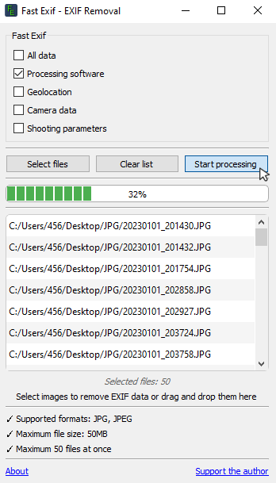

Fast EXIF
Simple and convenient tool for cleaning metadata from your images
What is EXIF Metadata?
EXIF metadata is hidden information added by cameras and software when saving images. It includes: Geotags (shooting coordinates). Camera parameters (model, aperture, shutter speed). Editing software data and much more.
Appearance

Features
FastExif can remove:
- Geotags only
- Camera information only
- Shooting parameters only
- Editing software data only
- Or all at once (complete cleanup)
Batch Processing
- Process dozens of files simultaneously
- Progress bar to track processing status
- Safe saving - original files remain unchanged
- Results saved as new files with _clean suffix (e.g.: photo_clean.jpg)
Download
Rating:
Version:
Compatibility:
Size:
Language:
License:
Installation:
Version:
Compatibility:
Size:
Language:
License:
Installation:
1.4
Windows 7, 10, 11
48 Mb
English
Free
Portable
The project is hosted on GitHub - the leading platform for open development with a multi-million community. GitHub is the standard for the IT industry.
Downloading files from official repositories is considered safe practice unlike questionable websites.
For Whom
- For photographers
— to hide shooting parameters before publication. - For travelers
— to remove geotags from photos. - For corporations
— to anonymize data in documents (GDPR compliance). - For web developers
— to optimize images.
Thank You!
Thank you for choosing our application!
We create it with care for you.
Any support you provide is very valuable to us and helps the project grow.
If you would like to support us, simply follow the link below.
Thank you!